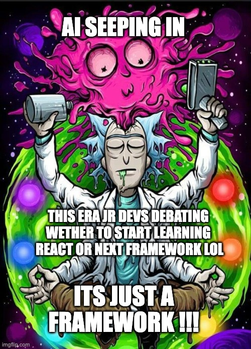

Jr.Devs in the Era of AI, but there is a Catch
- 💰 Sure it can help you land a job
- 💻 Generate codes block for you
- ⚛️ Ask for any solutions without knowing the why's
- ⅋ Causes Skill Issues ofcourse
I myself am a Jr.Dev and I realized how bad it actually is to have to rely on AI especially with how fast the tech moves these days + there are way too many "species" of AI being created. I want to share something I experienced from the outside world perspective as a Jr.Dev and give you my opinions on why I would rather avoid AI and in what cases to take advantage of it without giving ourselves skill issues on the journey into this new era.

Ever since I started learning to program, I have always wondered if books were really that useful. I always thought not having the ability to see the code running physically was a bad thing. I am not a CS student but an Aerospace Engineering one. The thing is, I didn't know that I liked programming at first, until around the end of my 2nd year of college. It started with Basics of Python in one of the college courses. That was when I really started to get into programming. Back then It was a lot of YouTube learning, experimenting, and Google searching. Didn't even know about stack overflow back then. Then Mr. GPT came around just in time. But umm..., yeah that's the problem.
Realizing what Mr. GPT can do really gave a turn to how I was learning to program. At this time, I was already jumping into JavaScript. I had a book about the fundamentals of JavaScript and read the whole thing. But why did I still find myself going to Mr. GPT when I got stuck? Yes, I was taking some courses, but I just felt like I wanted to build something straight away and just find out about it later. I knew I had the knowledge and resources available to do so. From YouTube tutorials to advanced ones, creating projects after projects just to realize I could not do it from scratch at all. Give me a blank HTML, CSS, and JS file, and I would just sit and stare into the blank Neovim pages.
This is because every time I start building something, it's usually already set up. The so-called Tutorial Hell. You will start to see how this Tutorial Hell links up with Mr. GPT. It was because I lacked the muscle memory to think and plan a project from scratch. Everything was about tutorials. The fear of trying, I would say, was holding me back quite a bit. Fear that the things I write may not work or something would break and it would take centuries to fix. But isn't that the point of it all? To write and not know anything about it. Then come back next time with what we now know.
This was when I decided to just jump in and build projects from scratch with no help. At this point, I practiced myself through it enough to build something from a blank page. I made a mistake, learn and repeat enough times to now know what I need to setup a project. Now came the problem during the logical thinking and other functions you have to create inside your projects to paste your ideas out into code. I was clueless again.
I'll let you guess the first thing I did when this happened.
I went straight to Mr. GPT, who had now had quite a few updates. I don't remember exactly why I did this. I think it was because of how powerful the GPT trend was at that time and I just decided to go for it. Yes, I had that amazing book which I did not fully realize until later on.
And so I was smashing through everything, every question I had during the project. Every error I got, every single thing I was stuck on such as how do I grab this from this, and by this I meant copying the damn code and pasting it for Mr. GPT, prompting it to follow my commands lul. Mr. GPT did solve it all. It made me feel like a Chad Programmer. I got sucked into this GPT hell. Do you see how it's the same as Tutorial Hell? Little did I know, some parts of it were wrong and sometimes it just did not work. I would waste time looking at it ,not understand anything and ask GPT to write a new one. But all I did was copy the same thing and tell GPT about the problem. I would redo this a bunch until I got the correct one, prompting it continuously. This was when I knew that this isn't going to work. How am I ever going to learn how to write it on my own if I don't even know what the hell went wrong with it? How would I know to think logically by looking at all the arrays, objects, functions, const, booleans, classes and create the thing I want the code to do? It wasn't effective at all. Yes, it did solve a lot of problems I had and these were basic problems. But it never made me better. It only made me better at asking GPT to give me a good correct answer 😑. I tried re-doing the whole same project over and I still got stuck in the same places, having no muscle memory of what Mr. GPT told me because it was just a bunch of copy and paste. Its not just this one project. I even went on experimenting with many of the projects I wanted to make but never really progressing much. Very little reading and understanding of the code itself.
I knew I had to get out of this GPT Hell. So I just avoided it for the rest of my learning period with no date on when Im going to come back to it. Until I understood some of the JavaScript stuff myself, then only I realized that Mr. GPT can actually be useful in some cases. I had trouble remembering what parameters a method in JavaScript takes. Yes, now this is when Mr. GPT can be very useful. It can explain to you clearly what this function does, what parameters it takes, that this is an array method that returns or that does not return. Then you write it out and implement it further on your own with what you wanna build. That's how you actually learn and remember. Of course there are more examples but this is just one of them.
What I am trying to say is, don't let Mr. GPT take over. You should take over Mr. GPT. Use it effectively, not simultaneously whenever you get stuck.
I got to the phase where the more I used GPT to understand how classes and constructors work + researches from Mdn websites,a bunch of other websites and so on, putting those things to work onto my own code, I find myself relying less and less on Mr. GPT as time goes on. It's like you look at a specific tutorial once and then it's gone once you master it. That's when I totally removed Mr. GPT from my browser bookmarks.
I am only really using GPT when I already understand what I'm doing and I only need quick clarification on things I don't remember or understand.I'm not asking it to give me a code to fetch an API or something like that ever. You get the point. That's how you should prompt it. With things that you are already somewhat familiar with. Don't just go around telling it to do something for you when you yourself don't even have a clue whether GPT is giving a correct answer or not. It was a mistake learned for sure. There were times during my internship where I did not even wanna rely on Mr. GPT because I was worried about the security issues. The code Mr. GPT provides are not 100% right and it would totally replace the reason I was doing internship in the first place. Just so you see the real picture when using GPT in real life. Sometimes the stuff is literally too complex for it to even understand. I found this out when I was testing out the new version of GPT to see what its capable of and clear enough, with real world tasks. It still never made it to my browser bookmark during that whole 6 months.
With that said, I find myself looking and learning from the first JavaScript book I read by O'Reilly. Starting to see even more things I missed during the first read through. Somehow I found a way to read and experiment with it. It totally changed my perspective on thinking that "Are books really that useful when you can't physically instantly see what results you are getting?" But you can, just gotta put the work in. Maybe I was just dumb back then lmao. I would say learning how JavaScript works in real code and then coming back to reread the book was a totally different experience from reading it the first time. Suddenly, it's as if more useful information just appeared. It could be that I didn't read it as clearly during my first go through, but I'm sure there are people like me out there.
Google, by the way, was the most helpful. The developer community is so wide and helpful. You can literally find anything if you know how to look for it. It will take some time to master this skill of finding what you want. But as you go on this journey, it will come to you eventually. You will be surprised with how much there is out there.
Some may say, well, searching and looking for these things on Google takes too much time and I don't have that kind of time. Believe me, Mr. GPT isn't faster either. Solutions you find on the internet such as Stack Overflow may not exactly be like your code, but this is when it forces you to re-implement it into your own code. You could be reading through some solution and knowing which is the one you want and which isn't. You learn something from that. The different ways things can be written to achieve the same thing. Compared to Mr. GPT, prompting without knowing will just give you a wrong solution that you just copy and paste. Then you are left wondering what went wrong. This leads you to do the same repetitive task with Mr. GPT until you get it right. How boring is that? You don't learn anything and you're giving yourself a reason to make programming not fun when it can be fun.
Going around discovering the solutions with multiple ways of doing is fun. It forces you to read and understand those lines of code. There is the fun factor in having to discover it. It's a skill that I would say has so many advantages that I am very confident everyone can be quick with as your journey goes on.
The Outside AI Perception
I have been talking with a lot of my friends inside and outside the Tech Industry.
A couple of us seem to be dealing with the question, "Isn't there an AI that can do it all?"
I myself have had this thrown at me as well, not in an offensive way,
but more in a way where people just don't know the reality of it.
Many of us who are like me, just coming into this industry, seem to have faced these types of questions from others outside the industry.
I guess it's just the effect of AI. Everyone outside seems to think it's easy and advantageous to be a software engineer
in this era because of ads that show off what AI can do. Yeah, it can be quite powerful, but I wouldn't say it's easy.
It takes a lot of time and effort to build up that raw skill. Time is like your best friend here but at the same time your enemy.
It can be easy, but knowing the downsides of it, why would you do it? Plus, AI is not as effective as people outside the industry think it is.
I mean, try sitting and prompting it for hours and hours, then you will see how useless it can be sometimes.
It's just something that some of us new developers have to deal with and live with.
I've also seen a big rise of people joining the industry from somewhere.I don't remember exactly where.
I could be wrong, but just because AI is able to do so many things, personally, I don't think it can take over the industry.
Especially Senior Devs, AI would never replace them.
I see AI being implemented into a lot of the simpler to more complex tasks in the future, but I don't see it replacing anything fully anytime soon.